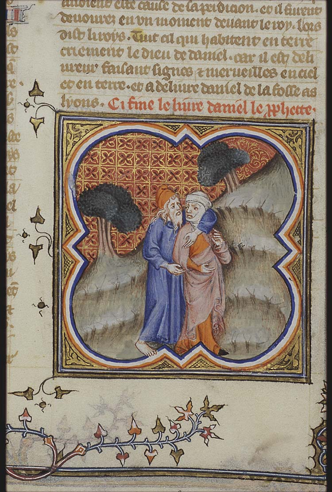

TW: profanity, sarcasm, misuse of theological concepts.

There’s something special about “Venice Bitch,” the nine-minute-long song from Lana Del Rey’s 2019 album Norman Fucking Rockwell. Wikipedia writes that the song earned “unanimous praise from music critics” and “was ranked by numerous publications amongst the best songs of the year and decade,” while Tyler Cowen recently spoke about his affection for this song in a 2023 podcast with Rick Rubin, calling it his favorite song of recent years:
[“Venice Bitch”] just leaves me on the floor… It's one of those songs like “Strawberry Fields Forever” that it's even difficult to talk about, but it's a kind of dream pop, and it's creating a dream. It keeps on shifting like a dream. There's this extreme willingness to admit her passion for her lover's kiss, creating or harkening back to this world of an earlier America where things seemed much simpler, but the music is complex and it all comes together. And then there are seven more minutes of it where it becomes weirder. And you're always longing for the earlier, more melodic part to come back, and it never does, and it just makes you want to have to listen to it again.
The themes of “Venice Bitch” are, on the surface, obvious—nostalgia, lost love, memories of an idyllic time. But these ideas come from scattered images and, as Cowen notes, it’s hard to actually make sense of the song’s fragmented and metaphorical lyrics. Who is the lover? What happened to their relationship, why were they back together and then apart again, and what does the song’s fragmented and poetic ending mean? And, if nobody understands this song, why does it have such a peculiar hold over so many listeners?
Lana is no stranger to cryptic lyrics. In 2024, she told an interviewer that “I’ve put parts of my story into songs in ways that only I understand” and, when asked about her album’s story, replied “You have to figure it out.” While many writers have argued about the meaning of “Venice Bitch,” I think nobody’s yet unveiled the full esoteric meaning of this song. I will attempt to do so in this post.
More specifically, I’ll argue that behind the literal meaning of “Venice Bitch,” which refers to places and events in southern California, there’s a deeper allegorical/anagogical meaning to the song. Early church fathers, medieval authors, and Jewish mysticism all agree that there are multiple layers of meaning to any text, including not only the literal narrative but also moral and allegorical meanings designed to be understood upon deeper analysis and contemplation. As I’ll argue below, I think Lana Del Rey is part of this tradition and “Venice Bitch” cannot be fully understood solely through the surface-level narrative.
(If you haven’t done so, it’s worth listening to the song before reading further.)
There’s little that’s concrete to start with in a song as meandering and poetic as “Venice Bitch.” One of the song’s only unambiguous references is the line “nothing gold can stay,” which comes from a 1923 Robert Frost poem. I’ll reproduce the poem here in its entirety, with emphases added:
Nature's first green is gold,
Her hardest hue to hold.
Her early leaf's a flower;
But only so an hour.
Then leaf subsides to leaf.
So Eden sank to grief,
So dawn goes down to day.
Nothing gold can stay.
Here, Frost uses the line “nothing gold can stay” to describe how the inherent beauty of creation always succumbs to decay in a post-Edenic world. The connection to Eden is particularly interesting for our purposes because in “Venice Bitch” the narrator writes about being “back in the garden” with her lover:
Back in the garden
We're getting high now because we're older
Me myself, I like diamonds
My baby, crimson and clover
If we entertain the idea that the “garden” might be Eden, what does it mean to be “back in the garden,” and how does this relate to “getting high now because we’re older”? Here we need to pull in another book from the Cowen Extended Universe, L. Michael Morales’s Who Shall Ascend the Mountain of the Lord? In this book, Morales argues that Eden is the original “holy mountain” of God, a lush garden-summit from which rivers flow to water the whole earth (pp. 51–52). In the “cultic cosmology” of the Pentateuch, ascent corresponds to movement towards God’s holy mountain while descent corresponds to movement away from God: hence why Abraham ascends Mount Moriah and Moses ascends Mount Sinai.
(It’s worth noting that the very first lines of “Venice Bitch” deliberately place us in a post-Edenic world: the narrator describes herself as dressing “in jeans and leather” in the first verse, echoing the “clothes of skins” from Genesis 3:21.)
Adam’s sin causes humanity to leave Eden and fall out of relationship with God, and even someone as righteous as Moses is unable to enter God’s presence by the end of Exodus. Within the narrative of the Pentateuch, only the Levitical temple cultus allows humans to once again reside in the presence of God and metaphorically “ascend the mountain of the Lord.” The tabernacle and later the temple thus serve as the new Eden, where God and man can dwell together—hence why the columns of the temple are carved to look like trees and hung with fruits. (G. K. Beale writes that “Israel’s earthly tabernacle and temple” were “reflections and recapitulations of the first temple in the Garden of Eden”; see The Temple and the Church’s Mission p. 66.)
So, through the mediation of the temple, we are allegorically “back in the garden” and “getting high” as we ascend to God's presence. This fits with the rest of the verse—”diamonds” reflects the high priestly breastplate covered in precious gems (which itself represents the entire cosmos, see Beale pp. 39–45), while “crimson and clover” refers to the blood-soaked hyssop used to paint the doorposts for Passover (Exodus 12:22) and, by extension, the idea that propitiatory sacrifice can appease God’s wrath.
(Why clover and not hyssop? Lana’s also alluding to the 1968 song “Crimson and Clover,” allowing the same line to serve two purposes.)
There’s more to “Venice Bitch” than a straightforward story of temple-mediated reconciliation, though. Let’s take one of the lines we discussed previously and zoom out to see the whole verse:
You're in the yard, I light the fire
And as the summer fades away
Nothing gold can stay
You write, I tour, we make it work
You're beautiful and I'm insane
The first line is simple enough: a reference to burnt offerings (“I light the fire”) conducted in the outer court of the temple (the “yard”). But here, the temple imagery is followed by the line that “nothing gold can stay,” suggesting that the imitation Eden of the temple is doomed just like the first Eden was and casting doubt on the whole temple enterprise.
What about summer fading away? In Song of Solomon, summer is associated with the presence of “the beloved” (Song. 2:8–13), which can be read literally as one’s lover but is also typically associated with God (what Kevin VanHoozer calls “an unbroken consensus for nearly nineteen centuries,” Mere Christian Hermeneutics p. 364). God is also represented by the sun in many other sections of the Bible (e.g. Malachi 4:2, Psalm 84:11). So the line “as the summer fades away” means that the presence of God is leaving the temple, recapitulating again the separation between God and man first experienced at Eden. God’s not leaving for good, but He’s growing more distant.
Since the remaining two lines of the verse occur after the decline of the temple cultus, it’s logical to associate them with the exilic and post-exilic prophets. The lyrics state that the narrator is touring—going around from place to place—while her lover is writing. This matches with imagery from Ezekiel, Hosea, and others which describe Israel as a faithless bride. While God writes through the prophets urging Israel to come back, Israel has abandoned their covenant and is wandering (“touring”) among the nations. Thus “you’re beautiful and I’m insane”; God’s love remains beautiful, but the narrator is not of sound mind and cannot accept this love (see also the opening refrain of “fear fun, fear love”).
The subsequent lines continue this theme:
Give me Hallmark
One dream, one life, one lover
Paint me happy in blue
The narrator, representing God’s people, wants a “Hallmark”-style marriage with one life and one lover (cf. Genesis 2:24, Revelation 21:2), and to be painted “happy” in blue. (Why blue? Scott Alexander’s written about the association of the color blue with the Virgin Mary.)
What prevents this marriage from happening? Let’s jump right to the chorus:
Oh God, miss you on my lips
It's me your little Venice bitch
On the stoop with the neighborhood kids
Callin' out, bang bang, kiss kiss
Here, the narrator literally addresses God, saying she misses him “on my lips” (continuing the Biblical idea of the romantic love between God and his people, or possibly a Eucharistic reference). Unfortunately, she’s not with him—she’s “on the stoop with the neighborhood kids.” Morales writes that the Tower of Babel, most likely a ziggurat or ancient step pyramid, was an attempt to reconstruct the mountain of God from the city of man (pp. 61–62). By so doing, the nations attempted to take divine power into their own hands, recapitulating the sin of Eden and triggering divine retribution.
In these lyrics, the narrator is sitting on the steps with the neighborhood kids, making her a participant in the sin of Babel alongside the nearby nations. As she sits, she is making advances to passers-by. She’s not being faithful to her lover; instead, she’s been corrupted by the other nations and is flirting with idolatry. It’s with these same emotions that the hymnist Robert Robinson writes “Prone to wander, Lord, I feel it” and asks God to “bind my wandering heart to thee.”
Why is she a “Venice bitch”? The story of Hosea is pertinent here. In Hosea, God tells the prophet Hosea to marry a prostitute (Gomer) and make her his wife. Gomer is not faithful to Hosea and eventually leaves, and in chapter 3 Hosea has to go back and pay money to redeem her, either out of debt or slavery (the text isn’t quite clear). This story explains the narrator’s self-identification as a “Venice bitch”: put crudely, calling herself a “bitch” represents her unfaithfulness, while the inclusion of Venice makes it clear that she’s enslaved as well (before the Instagrammable bridges, Venice was principally known as a slave-trading empire).
The earlier mention of summer fading away can also be read as a reference to Israel’s faithlessness. Ezekiel 8 mentions the pagan practice of “weeping for Tammuz,” where worshippers would spend the hot summer months ritually mourning Tammuz, the sun- and spring-related deity who according to myth died and was reborn each year. According to Ezekiel, this ritual was sometimes performed in the temple itself (“in the yard”), demonstrating the depth of Israel’s wickedness and idolatry.
The images of unfaithfulness connect to the narrator’s early self-description as an “ice queen” who’s “trying to be stronger for you.” Her frozen heart echoes the prophetic image of “hearts of stone” (Ezekiel 36:26) which are unable to return God’s love properly; her futile attempts to be stronger echo Paul’s writing in Romans 7:
For I have the desire to do what is right, but not the ability to carry it out…. For I delight in the law of God, in my inner being, but I see in my members another law waging war against the law of my mind and making me captive to the law of sin that dwells in my members. Wretched man that I am! Who will deliver me from this body of death?
As Paul describes, the narrator is trapped in a cycle of sin and failure, her frozen and stony heart unable to respond as she ought to God’s love. While in her inner being she wishes for “one love,” her fallen nature makes this impossible, leading to a cycle of continued spiritual unfaithfulness and distance from the divine.
We can connect these ideas to a line from the song’s first verse: “live stream, I'm sweet for you.” Following the original streams of water coming out of Eden to water the earth, the idea of a “living stream” is a common Biblical image for God’s nourishment: Psalm 1 describes the man who follows God’s law as “planted by streams of water,” while Jesus offers the “living water” of the Spirit in John’s gospel (John 4:13–14, 7:37–39) and the Edenic temple-city at the end of Revelation contains “the river of the water of life, bright as crystal, flowing from the throne of God and of the Lamb” (Revelation 22:1). Much like the woman in John 4, the narrator identifies as “sweet for” (i.e. desiring) the “live stream” of the addressee, symbolizing her desire to return the presence of God—but, of her own power, she cannot obtain this living water.
At this point, we’ve been in the weeds long enough that the skeptical reader might wonder: would Lana Del Rey really write such a detailed and theological subtext to her song? I of course can’t answer this conclusively—as noted above, Lana writes complex and secretive lyrics with little explanations, making it difficult to know what she would or wouldn’t say.
Still, her Christian credentials are pretty strong:
Let’s conclude by looking at the song’s ending. As Tyler notes, the song gradually shifts from a melodic opening to an increasingly atonal and experimental section in which the narrator repeats the lines “crimson and clover, honey” and “over and over, honey.” As mentioned above, “crimson and clover” reflects the propitiation of temple sacrifice. “Honey” represents the promise of God’s presence, a land “flowing with milk and honey” (Exodus 3:8, see also Judges 14:8–9 and 1 Samuel 14:24–30) while “over and over” shows us that the cycle of sin continues unabated, with no hope for improvement in the relationship between God and man. Even after the return from exile (“my baby’s back in town now”), the narrator pleads for the lover to return (“you should come, come over”) to no avail.
It’s against this chaotic backdrop that Lana suddenly sings the song’s final lyric, repeated five times:
If you weren't mine, I'd be jealous of your love
If you weren't mine, I'd be jealous of your love
If you weren't mine, I'd be jealous of your love
If you weren't mine, I'd be jealous of your love
If you weren't mine, I'd be jealous of your love
What does this abrupt and confusing ending mean? In Biblical language, jealousy is associated almost exclusively with God. God is a jealous God who wants his people’s love above all else (Exodus 20:5, 34:14; Deuteronomy 4:24, 5:9, 6:15). Here, it seems that the narrator has shifted and God himself has broken into the lyrics of the song. This literary device might seem unusual to modern audiences but it’s pretty common in the psalms: see, for instance, Psalm 12, Psalm 91, and Psalm 50.
God is responding to the endless cycle of “crimson and clover”–based attempts at reconciliation and asserting that He remains jealous for his people’s love. Just like in the prophets, God is promising to break the cycle of sin and create a new world in which His people can leave Him no more (cf. Jeremiah 31:34), achieving the promised mystical marriage between God and man: “one dream, one life, one lover” (cf. Revelation 21:2).
The song fades out here, leaving us uncertain how this can be accomplished. We can, of course, answer this question by referring to salvation history, the Gospels, or the New Testament. But we don’t even need to look that far to resolve this mystery. ”Venice Bitch” is a song by Lana Del Rey, which translated means “wool of the king.” What sort of king has wool? Only a king who is a lamb; namely, the Lamb Who Was Slain, who now sits enthroned in heaven (Revelation 5:6) and will one day bring justice and reconciliation to the world.